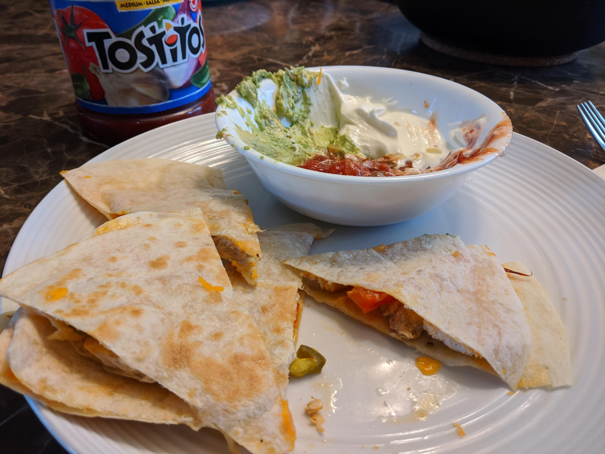

Chicken Quesadilla

Is it chicken? Is it rice? Nay, tis a delicious amalgamation
of both that delivers not just a satisfying experience,
but an addicting one.
Serves four people.
Ingredients
- 3 cloves of garlic
- 4 tbsp sesame oil
- 4 tbsp soya sauce
- 1 white onion
- 4.5 cups cooked rice (just less than 2 cups uncooked)
- 3 chicken breasts (shredded)
- 4 eggs
- 2-3 cups frozen veg (carrots, peas)
(Optional)
- Green Onion
- Sesame seeds
Method
Rice
- Rinse two cups of rice
- Coat the bottom of the rice cooker with oil.
- Add half of a chopped small white onion.
- Add 5 cups of water.
- Cook rice and let sit for 10 minutes after done.
- Put rice on baking sheet and leave in fridge for 4 hours.
Putting it Together
- Cook chicken at 375F for 35 minutes.
- Lightly beat four eggs and scramble in an oiled pan until just barely curdled. Don't overcook. Set aside in separate bowl.
- Add 3 tbsp of sesame oil to an heated, oiled pan
- Add 2-3 cups of frozen vegetables and half of a small chopped white onion.
- Sautee for 3-5 minutes on med-high heat.
- Add 3 cloves of crushed garlic and fry for 30 seconds
- Add rice and 4 tbsp of soya sauce. Stir in well and break up any big clumps.
- Add in egg and shredded chicken and mix well.
- If dry add more sesame oil and/or soya sauce as needed.
- OPTIONAL: Add green onion and sesame seeds and Enjoy :)